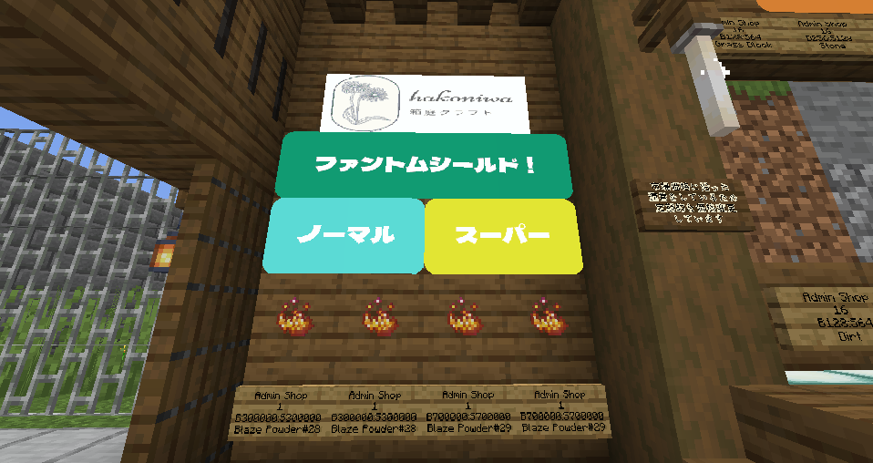

【新アイテム】対ファントム用アイテム「ファントムシールド」がAdmin Shopに登場！
いつも「箱庭クラフト」をご利用いただきありがとうございます。運営のtash087です。
夜間の建築や作業中に悩まされる「ファントム」。そんな脅威から身を守るための新アイテム「ファントムシールド」を、本日よりAdmin Shopにて販売開始いたしました！

▲ Admin Shopにて絶賛販売中！
✨ ファントムシールドとは？
設置することで、周囲にいるファントムを自動的に燃やし尽くす防衛用アイテムです。用途に合わせて2種類のグレードをご用意しました。
🔹 NORMAL
半径 10マス
拠点の入り口や小規模な作業スペースの保護に最適です。
🌟 SUPER
半径 20マス
広範囲をカバー！大規模建築や農場をしっかり守ります。
💰 販売価格
価格の詳細はAdmin Shopの看板をご確認ください。マーケットの状況により変動する場合があります。
これでもう、夜の作業も怖くありません。ぜひ「ファントムシールド」を導入して、安全で快適な箱庭ライフをお過ごしください！